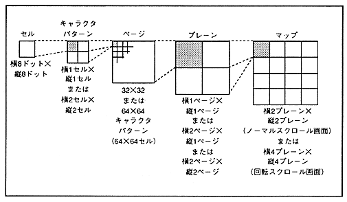

Figure 4.1 Cell format scroll screen configuration

The cell data is the dot color data stored in VRAM as a character pattern table. Color data is 4, 8, 16, or 32 bits depending on the number of character colors. Character pattern data consists of 1 or 4 cell data. Page data is the character pattern name data (character pattern data address) stored as a pattern name table. One, two, or four page data are arranged as a plane. The map specifies the start address of the pattern name table in the map register and map offset register. Figure 4.2 shows the correspondence between the scroll format of the cell format and the data settings.